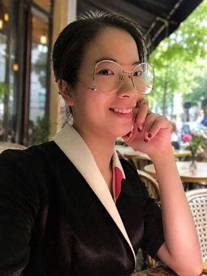

Welcome to SafeML!
SafeML is a research lab dedicated to the study of trustworthy machine learning and AI safety. It is led by Professor Yiwei Lu at the University of Ottawa. Its members are affiliated with the Centre for Applied Artificial Intelligence and the Vector Institute.
Our research advances the trustworthiness of artificial intelligence by understanding the risks and addressing the safety concerns raised by state-of-the-art machine learning systems, from large language models to agentic systems.
Broadly, we aim at building a future of AI that aligns with human values, with minimized negative impact.
Specifically, we conduct research in three directions:
- The interplay between data and machine learning systems — data poisoning attacks, generative engine optimization, and the reliability of LLM memory systems.
- The mechanisms of modern models, studied with interpretability tools such as neuron localization, inference-time steering, and other mechanistic interpretability methods.
- Domain-specific safety concerns in applied AI, addressed systematically across software engineering, finance, and healthcare.
We are always looking for motivated students to join the lab — see Opportunities for specific postings.
News
- Prof. Yiwei Lu is serving as Program Co-Chair of Canadian AI 2027, the 40th Canadian Conference on Artificial Intelligence.
- We welcome new PhD students Xiaoqian Lu and Junfeng Zhu to the lab.
- Prof. Yiwei Lu organized the Data and Model Protection (DMP) workshop at Canadian AI / CRV 2026 at Simon Fraser University in Vancouver.
- SafeML is now funded by an NSERC Discovery Grant with a Launch Supplement.
People
Principal Investigator
Yiwei Lu
Assistant Professor at the University of Ottawa, cross-appointed by the School of Engineering Design and Teaching Innovation and the School of Electrical Engineering and Computer Science. Faculty affiliate at the Vector Institute and a member of the Centre for Applied Artificial Intelligence (CAAI).
His research focuses on trustworthy machine learning — particularly its reliability, security, and robustness. He obtained his Ph.D. in the David R. Cheriton School of Computer Science at the University of Waterloo, his M.Sc. in Computer Science at the University of Manitoba, and his bachelor's degree in Electronic Engineering at the University of Electronic Science and Technology of China.
yiweilu3.github.io →Postdoctoral Researchers
- 2026–Mert Sehri, University of Ottawa — Postdoctoral Researcher, co-supervised with Prof. Patrick Dumond
Graduate Researchers
Xiaoqian Lu

Junfeng Zhu
Mentoring & Mentored Students
- 2026–Eilay Katsnelson, University of Ottawa — Undergraduate Researcher
- 2026–Jingyu Hu, University of Toronto — Research Intern
- 2026–Jia Sheng, University of Ottawa — MSc Systems Science & Eng., Summer Project
- 2026–Mohammad Hossein Moslemi, Western University — Vector AI Research Internship
- 2026–Shivani Singal, University of Ottawa — NSERC USRA → MSc, University of Alberta
- 2026–Christian Paravalos, University of Ottawa — Undergraduate Researcher → MSc, University of Oxford
- 2026–Yingxuan Wang, University of Waterloo — Summer Intern
- 2026–Chenyu Zhang, University of Waterloo — Undergraduate Researcher
- 2025–Jack Sanderson, University of Chicago — Vector AI Research Internship
Publications
* denotes equal contribution. Full list on Google Scholar.
2026
2025
2024
On the Robustness of Neural Networks Quantization against Data Poisoning Attacks
2023
CM-GAN: Stabilizing GAN Training with Consistency Models
2022
2021
f-Mutual Information Contrastive Learning
AdaCrowd: Unlabeled Scene Adaptation for Crowd Counting
2020
Few-shot Scene-adaptive Anomaly Detection
Structure Learning with Similarity Preserving
2019
Theses
Trustworthy Machine Learning with Data in the Wild
Anomaly Detection in Surveillance Videos using Deep Learning
Opportunities
We are actively recruiting students for Fall 2027 and beyond.
If you are passionate about trustworthy machine learning — data poisoning, machine unlearning, memorization, LLM safety, mechanistic interpretability, or related topics — we'd love to hear from you.
All MSc and PhD applications now go through the Vector Institute Graduate Student Program. Select Prof. Yiwei Lu (University of Ottawa) as one of your supervisor preferences.
Apply through Vector →Open positions
- PhDComputer Science or Digital Transformation and Innovation
- MScComputer Science or Digital Transformation and Innovation
- UndergraduatesNSERC USRA, capstone projects
- Visiting studentsShort-term research visits and internships
What we look for
- Critical thinkingWillingness to dig into questions where the right answer isn't obvious yet.
- Technical skillsA solid background in optimization, machine learning, or LLMs. Prior research experience — publications, internships, projects — is a plus.
- Working with AIThe ability to adapt and use AI tools with a critical understanding of their strengths and limitations.
- CommunicationWillingness to ask questions, share work in progress, and engage with feedback. Clear writing matters.
A formal CS background is welcome but not required — we supervise students from engineering, mathematics, statistics, and adjacent fields.
How to apply
MSc and PhD applicants
- Apply through the Vector Institute Graduate Student Program — one free application for Vector-affiliated faculty at participating Canadian universities, including uOttawa. Select Prof. Lu as one of your supervisor preferences. You'll need transcripts, a 1–2 page CV, a 1–2 page research statement, and 2–3 referees.
- If your background looks like a fit, Prof. Lu will reach out to schedule a chat.
- Also apply formally through the University of Ottawa graduate admissions portal — Vector is not a degree-granting institution.
For the 2026–27 cycle, Vector's soft deadline is October 23, 2026 (12:00 p.m. ET) and the portal closes January 15, 2027. Applying by the soft deadline is strongly recommended.
A note on email: Prof. Lu does not normally reply to emails from prospective students. You may email him only if (1) you have already submitted your application through Vector, (2) your GPA and English proficiency meet the University of Ottawa's requirements, and (3) you have published a paper at a top-tier conference (e.g., ICML, NeurIPS, ICLR) or an equivalent venue (e.g., ACL, CVPR, IEEE S&P). Please include “Gee-gees” in your email subject line; otherwise it will go to his junk folder.
Undergraduate and visiting students
Vector's program is for incoming graduate students only. For NSERC USRA, capstone projects, or research visits, email Prof. Lu at yiwei.lu@uottawa.ca with your CV, transcript, and a short note on which research direction interests you. Please include “Gee-gees” in the subject line so it doesn't land in his junk folder.
We do our best to read every application, but may not be able to reply to all of them individually. Please don't be discouraged if you don't hear back — it doesn't reflect on the strength of your application.
Frequently asked questions
Do I need to email before applying?
No. MSc and PhD applicants should apply through the Vector Institute Graduate Student Program first. Prof. Lu does not normally reply to emails, but once you have applied through Vector, meet the University of Ottawa's GPA and English requirements, and have published a paper at a top-tier conference (e.g., ICML, NeurIPS, ICLR) or an equivalent venue (e.g., ACL, CVPR, IEEE S&P), you may email him. Undergraduate and visiting students (including current uOttawa students) can email him directly. Either way, include “Gee-gees” in the subject line, or your email will go to his junk folder.
I am an international student. Am I eligible?
Yes. Tuition is higher than for domestic students, but PhD students are automatically eligible for the differential tuition fee exemption, and scholarships such as the NSERC Doctoral Scholarship and the Ontario Graduate Scholarship are available. Canadian visa applications can take a long time, so apply early.
What are the English language requirements?
They vary by program — see the University of Ottawa program-specific requirements page.
When are the application deadlines?
Deadlines for each term are listed on the program-specific requirements page. International applicants should apply earlier than the formal deadline. For MSc and PhD applicants, the Vector Graduate Student Program has its own timeline: soft deadline October 23, 2026; faculty review in November; portal closes January 15, 2027.
Can I do a remote internship or visit?
Most projects are in person at uOttawa, but remote arrangements are possible for specific visiting or internship setups when there is a strong fit.
Do I need a CS degree?
A CS degree is usually required by the CS programs but not by the DTI program. What matters more is your coursework and experience: linear algebra, probability, statistics, machine learning, optimization, and programming, plus a strong research fit.